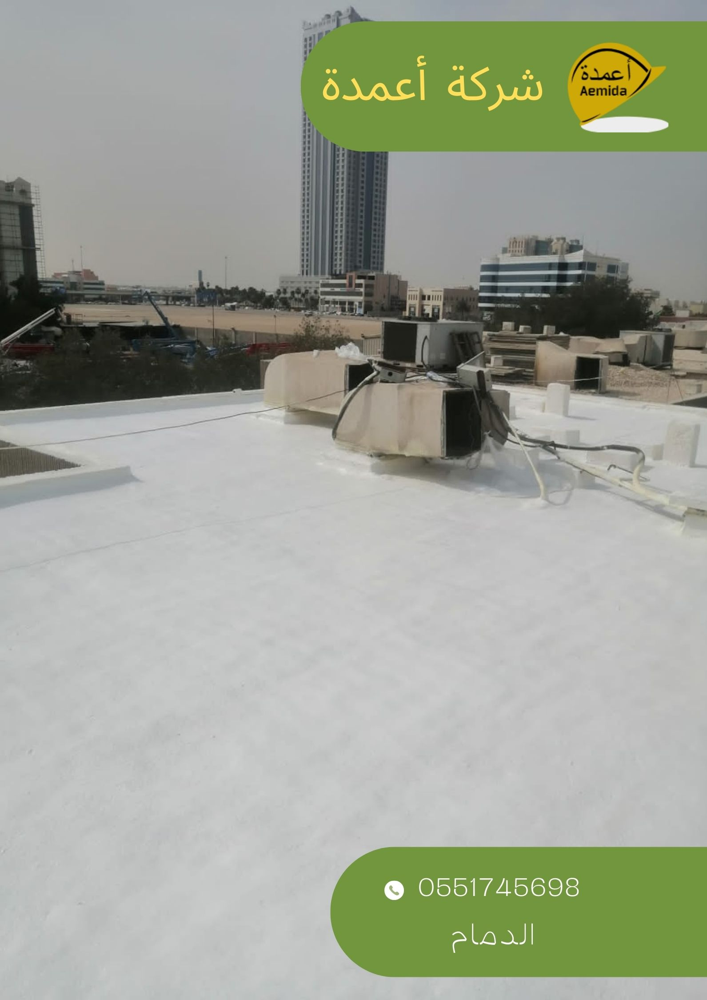

Loading...
عزل الاسطح والخزانات بالدمام، عزل مائي عزل حراري كشف تسربات المياه.
أكتشف مميزات شركة أعمدة في توفير خدمات العزل الحراري والعزل المائي وكشف تسربات المياه
تعتبر شركة أعمدة هي الرائدة في خدمات العزل الحراري بالدمام لانها تعمل بأفضل المواد والخامات الحديثة في السوق السعودي وعلي يد نخبة من المهندسين والفنيين مدربين على طرق التنفيذ في هذا المجال طبقاً للمواصفات القياسية السعودية
 تعد ظاهرة ارتفاع درحة الحرارة في المملكة شائع ولا يحتاج الي شرح طويل فأن مع أرتفاع درجة الحرارة
للمنازل والمباني في العموم يعيق البيئة المحيطة بالانسان ولذلك تحتاج المباني للعزل الحراري واصبح شيئ
ضروري لكل مبني لان مواد البناء او الخرسانة المسلحة وغيرها تذيد من عامل أحتباس الحرارة ومواد عزل
الحرارة لابد ان تقوم بعملها والتخفيف عن أجهزة التكييف ويعملون معاً وبالتالي تتوفر درجة حرارة ملائمة
للتعايش في المنزل او المبني والحد من استهلاك الطاقة الكهربية.
تعد ظاهرة ارتفاع درحة الحرارة في المملكة شائع ولا يحتاج الي شرح طويل فأن مع أرتفاع درجة الحرارة
للمنازل والمباني في العموم يعيق البيئة المحيطة بالانسان ولذلك تحتاج المباني للعزل الحراري واصبح شيئ
ضروري لكل مبني لان مواد البناء او الخرسانة المسلحة وغيرها تذيد من عامل أحتباس الحرارة ومواد عزل
الحرارة لابد ان تقوم بعملها والتخفيف عن أجهزة التكييف ويعملون معاً وبالتالي تتوفر درجة حرارة ملائمة
للتعايش في المنزل او المبني والحد من استهلاك الطاقة الكهربية. كما اننا نوفر دائماً العروض والدقة في التنفيذ ونوفر خدمات أخرى عند الحاجة مثل كشف تسربات المياه
وايضاً نوفر خدمة ترميم منازل بالدمام لعمل ترميمات للمباني والمنازل بأحدث الطرق العلمية الحديثة وأحدث الأجهزة.
يمنع العزل تاثير أي ضرر سلبي على الأسطح حيث تتميز مادة العزل بقوة الصلابه .
تحافظ مادة العزل على الصبه للأسطح من الكثير من المشاكل التي من الممكن أن يتعرض لها .
يحافظ العزل على حديد الخرسانه من تعرضه لصداء و التأكل مما يكون المنزل أكثر أمان .
يمنع العزل أصابة المنزل تسرب المياه الى داخل المبني مما يحافظ ذلك على الشكل الداخلي للمبني .
يقوم العزل بحماية المنزل من أخطر المشاكل التي يتعرض لها و هو خطر الرطوبه و ذلك ما يؤكد أهمية العزل الكبيره من شركة عزل أسطح بالدمام .
يحافظ العزل على المنزل من إرتفاع درجات الحراره العاليه التي تسبب مشاكل كثيره على معظم المنازل .
يمنع العزل تسرب الحراره بداخل المنزل ينتج عن ذلك إعتدال درجات الحراره الداخليه للمنزل .
حيث يعتبر العزل عامل رئيسي في توفير الكهرباء مما يتم توفير الكثير من الأموال .
مع وجود عزل للمبني الخاص بك فأنك قد تقوم بالاحتفاظ بدرجة حرارة المناسبة للمعيشة داخل منزلك دون الحاجة الى اجهزة التكييف أو تقليلها وبذلك اصبح المبني ملائم لراحة الانسان وأكثر صحياً من قبل ورفع نسبة الحراحة الجسدية مع وجود عوامل اخرى كثيرة تجعلك تستعين بشركة عزل الحرارة.
يقلل من استلاك الطاقة الكهربية
مع وجود أجهزة التكييف المنتشرة حولنا في كل مكان تذايدت نسبة ارتفاع أستهلاك الكهرباء بشكل ملحوظ فأن في فصل الصيف ترتفع النسبة حوالي 68% من أجمالي الطاقة المستخدمة في المبنى فأصبح بعد أن نلجأ لمواد العزل الحراري سيتم توفير الكثير من أستهلاك الطاقة وبالتالي انخفاض في فاتورة الكهرباء وتعتبر هذا التوفير من أكثر المميزات عند وضع العازل الحراري في المبنى الخاص بك وجعل منزلك مناسب لمسكنك وأكثر ملائمة.

 وهي التي يتم من خلالها عكس درحة الحرارة من سطح الى أخر وتتنوع أيضاً المواد العاكسة فمنها صفائح الفولاذ والالمنيوم والدهان العاكس والورق العازل ويتم تركيبها على شكل شرائح أو رقائق وتستخدم هذه المواد في عزل الجدران والاسقف ويوجد مواد أكثر من ذلك غير شائعة.
تختلف أيضاً نوعية هذه المواد في العزل منها مادة البيرلايت السائل وهذه المادة متميزة بأنها خفيفة الوزن وتمتاذ بالانسياب لانها عند وصول درجة الحرارة الى 90%م يتم تمديدها أكبر من حجمها وتكون فراغات هوائية وذلك يجعلها فعالة في عزل درجة الحرارة جداً بالاضافة انها يمكنها أيضاً تقوم بالعزل الصوتي ويعد اكثر استخدامات المادة هذه في الطوب المعزول بالبيرلايت
الفوم السائل يستخدم في عزل الصوت والحرارة واستخدامات شائعة في الصناعة حيث يستخدم في الاضرار واسطوانات عوادم السيارات والعديد من الستخدامات في المباني والصناعات.

افضل شركة عزل اسطح بالدمام
كيف يتم عزل الاسطح؟
هُناك عدة انواع للعزل وتختلف من حيث الاماكن المطلوب بها العزل بالمنزل ومن هذه الانواع يوجد عوازل تسكب أو اللفائف الزجاجية أو البالستيكية وعدة طرق اخرى وكثرة هذة الطرق تجعل الناس تبحث عن أفضل شركة عزل اسطح بالدمام ولذلك نقدم لكم شركة أعمدة حيث نوفر لك خدمة ممنازة مع مراعاة الاسعار وبجودة ممنازة على يد نخبة من المهندسين والفنيين وبأحدث الطرق والاجهزة فقط تواصل معنا وسنصلك.
ينقسم عزل الاسطح الى ثلاثة اقسام وهي
افضل شركة عزل خزانات بالدمام
شركة عزل ايبوكسى بالدمام
عزل الايبوكسى وأهم مميزاته وكيفية استخدامه بالدمام شركة عزل ايبوكسى بالدمام إن عزل الايبوكسى من المواد التي تستخدم في عملية طلاء الأسطح الملساء والتي يجب أن تكون أسطح ناعمة حتى تحصل على شكل نهائي جيد،
وسنعرف الكثير من خلال مقالنا عن عزل الايبوكسى، حيث للايبوكسي الكثير من الاستخدامات ويدخل في الكثير من المجالات،
فهو لم يصبح مادة عازلة أو لاصقة فقط فأصبح له عالم واسع خاص به.
اولاً نقوم بسرد ما يحدث مع وجود خزان مياة في منزلك سواء أعلى المنزل او بالاسفل عليك أن تتأكد أن هذا الامر له مخاطر كثيرة مثل عوامل التسريب أو زيادة الرطوبة أو تكون الاملاح بها يضع منزلك في أمر خطير من حيث عوامل الترشيح واذابة مواد البناء المستخدمة في منزلك وهذا الامر يحدث مع جميع الخزانات سواء كانت مصنوعة من حديد مجلفن أو من مادة البلاستك
فيديو توضيحي للعزل الحراري
تعتبر شركة أعمدة هي الرائدة في خدمات العزل الحراري بالدمام لانها تعمل بأفضل المواد والخدمات الحديثة في السوق السعودي وعلي يد نخبة من المهندسين والفنيين مدربين على طرق التنفذ في هذا المجال طبقاً للمواصفات القياسية السعودية
كما تتميز بأنها توفر دائماً العروض والدقة في التنفيذ ونوفر خدمات أخرى عند الحاجة مثل كشف تسربات المياه
وايضاً نوفر خدمة ترميم منازل بالدمام لعمل ترميمات للمباني والمنازل بأحدث الطرق العلمية الحديثة وأحدث الأجهزة.